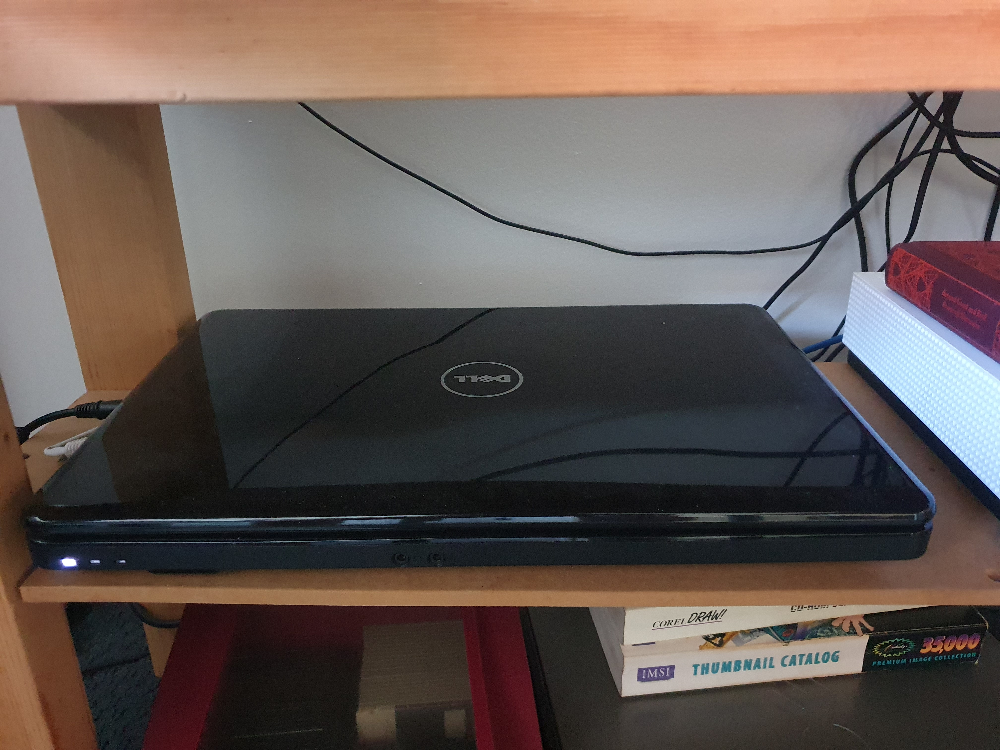

I had an old Dell laptop which was distributed with Windows 7, sitting unused in a cupboard for a number of months. I occasionally pulled it out to install and test a linux distribution that I had discovered but I didn't have any consistent use for the machine.
I had heard of Pi-hole a number of months earlier, and mostly forgot about it until I saw online used in a home-lab setup.
Firstly, I installed Ubuntu 24.04.3 LTS as the base operating system, that Pi-hole would run off of. Next I went to the Pi-hole website and ran the curl command to pull down and run the install script.
As the install script ran I was presented with a number of options in the TUI interface in regards to DNS and security. I decided to stay with the defaults as I did not have any reason to change them. However while in the TUI setup I realised that I had not yet created a static IP address for this machine, which was required for Pi-hole to work correctly.
Consequently, I exited the setup and went into my router settings, where I set a static IP address for the dell laptop. Going back to the machine, I was now able to verify that the machine had received its static address and so I restarted the Pi-hole setup again.
After finishing the setup I navigated to the Pi-hole web interface using the static IP I had just set, with the suffix /admin. On the web interface I was able to view all clients connected to the network and monitor which requests were denied and what addresses they corresponded to.
This setup worked well for the first few weeks, however I had been noticing that not all advertisements had been blocked. I knew that Pi-hole worked on a website-list system and that there was other lists that could potentially produce greater results.
Subsequently I searched and found two more lists that claimed they worked well for moderate ad-blocking cases. I then was able to simply copy the links to these lists, into the settings of the Pi-hole web interface and restart the Pi-hole service.
After adding the extra lists the Pi-hole server was running well, up until a few days ago where I had started to notice an increase in the amount of advertisements that were shown. As I had not been actively monitoring the web interface, I decided that would be the first place to check.
However when I attempted to navigate to the web interface I was met with a page not found error message. As I was sure that the address was correct I decided to open the machine itself to see if there was an error that had been reported.
It turned out that there was a connection error which required the Pi-hole service to be restarted and updated, and after doing so worked correctly as it had before.
Originally when starting this project I was concerned that all of the traffic on my network would be slowed down. It turned out however that this was not the case, and I have seen no noticeable drop in network performance, from any device connected to the network. And despite the machine being at least 16 years old, it has been able to keep up with the traffic of my home network.
